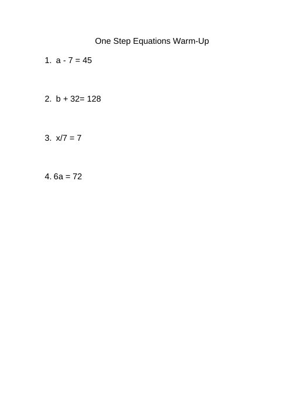
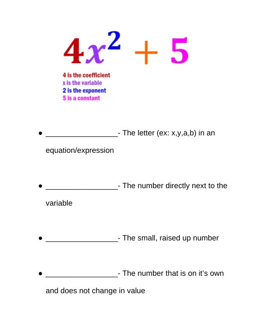

Unit 1 Review & Test
B3_9-29_30LessonPlan.docx
Also in: Block 3 Math/Week 5/Lesson Plans
PA Standards
- CC.2.2.HS.D.9 / CC.2.2.7.EE.A.1: Evaluate algebraic expressions using substitution and order of operations, including absolute value.
- CC.2.1.8.E.4 / 8.NS.A.1: Distinguish between rational and irrational numbers.
- CC.2.1.8.E.1 / 8.EE.A.2: Simplify expressions involving square roots (radicals).
Essential Questions
- How can we review and demonstrate what we've learned about evaluating expressions, order of operations, absolute value, rational/irrational numbers, and simplifying radicals?
- How can I use accommodations and reference tools to show my best understanding on a test?
Objectives
- Students will review Unit 1 topics through a guided test review packet (2 questions per topic, 16 total).
- Students will review Unit 1 topics through review Gimkit games.
- Students will independently complete the Unit 1 test, using accommodations as needed (small group setting, read-aloud, calculator reference sheet).
Assessment
- Completed test review packet (16 questions, 2 per Unit 1 topic)
- Gimkit performance data
- Unit 1 test score/completion
Differentiation
- Test review packet completed together as a class/guided to check understanding before independent testing
- Small group testing setting (built in, as the class has 8 students)
- Test questions read aloud as needed
- Calculator functions reference sheet provided to all students
- Additional individualized accommodations (e.g., extended time) provided per IEP as needed
Classroom Environment & Routines
- Visual schedule displayed showing today's segments: review packet, Gimkit, lunch, and test
- Calm, quiet, focused environment established for the post-lunch testing block
- Clear expectations reviewed before testing begins (independent work, no talking, raise hand for help)
- Materials (calculator reference sheets, test copies, accommodation materials) organized and ready before the test begins
Activating Prior Knowledge
(0-30 min) Test review packet: complete together as a class, covering 2 questions per Unit 1 topic (16 total), checking for understanding throughout.
Materials Needed
- Test review packet (16 questions, 2 per Unit 1 topic)
- Calculators
- Devices for Gimkit
- Unit 1 test copies
- Calculator functions reference sheet
- Additional accommodation materials as needed (read-aloud support, extended time signage, etc.)
Vocabulary
Evaluate, substitute, order of operations, absolute value, rational number, irrational number, radical, simplify — review of Unit 1 vocabulary
Lesson Sequence
- (30-45 min) Review Gimkits covering Unit 1 topics.
- LUNCH ---
- (45-90 min) Unit 1 Test: students independently complete the test. Since the class has 8 students, this naturally serves as a small-group testing accommodation. Additional accommodations provided as needed: questions read aloud, calculator functions reference sheet available to all students.
Closure
- Collect completed tests.
- Briefly preview the next unit of study.
Show the original document here
Materials from the same week

